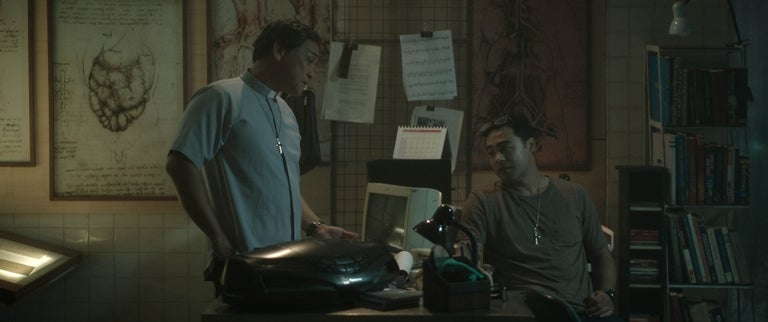
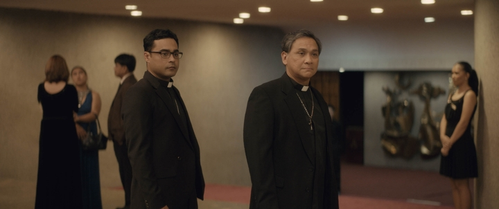

Isinulat ni Maria Felisa H. Batacan (F.H. Batacan), isang Pilipinong may-akda at mamamahayag, ang "Smaller and Smaller Circles" ay itinuturing na isa sa mga unang Filipino crime novels. Unang nailathala noong 1996, ito ang debut novel ni Batacan. Ang kuwento ay sumusunod sa dalawang pari ng Simbahang Katoliko, sina Fathers Gus Saenz at Jerome Lucero, na gumagamit ng kanilang kaalaman bilang forensic investigators upang habulin ang isang serial killer na pumapatay at nangmumuta ng mga batang lalaki sa maralitang lugar ng Payatas sa Maynila. Ang "Smaller and Smaller Circles" ay nanalo ng Carlos Palanca Grand Prize para sa English Novel noong 1999, pati na rin ang 2002 Manila Critics' Circle National Book Award at ang Madrigal-Gonzalez Best First Book Award noong 2003.
Hindi lamang ito isa sa mga unang Filipino serial killer crime stories, ang "Smaller and Smaller Circles" ay isang matalim na pagsusuri sa lipunan hinggil sa kawalan ng katarungan at pagkakapantay-pantay sa Pilipinas. Sinusuri ni Batacan ang birokrasya, kahirapan, korupsyon sa pulisya, Simbahang Katoliko, at ang malupit na midya. Binago at pinalawak ni Batacan ang nobela noong 2013. Sa kanyang pasasalamat, ipinaliwanag ni Batacan na noong unang isinulat niya ang libro, galit siya sa kalagayan ng kanyang bansa. Sa ikalawang pagsusulat, ipinahayag niya, mas lalong galit siya sa katunayan na mas masahol pa ang kalagayan ng kanyang bansa kaysa noong 1996 at nasaktan sa "kawalan ng malasakit, kahambugan, at korupsyon na nagpapatuloy nito."
Ang "Smaller and Smaller Circles" ay karamihang isinasalaysay mula sa ikatlong tao na may pangunahing perspektibang omniscient, ngunit may mga interbensiyon ang mamamatay-tao sa nagtatension unang tao. Ang kuwento ay nagsisimula habang sinusundan ng parish priest ng Payatas, si Father Emil, ang isang grupo ng kanyang "slum kids" paitaas sa bundok ng basura sa limampung-ektaryang landfill kung saan ang mga batang bata ay naghahanap-buhay sa mga tambak ng basura para sa kalakal at pagkain. Inilaladlad ng mga bata si Father Emil sa katawan ng isang batang lalaki. Ang mukha ng bata ay inihiwalay mula sa kanyang bungo, tinanggal ang puso, at inalis ang kanyang mga genitalia. Ito ang pang-anim na natagpuang patay sa ganitong paraan.

Si Father Gus Saenz ay isinasagawa ang autopsy sa batang lalaki. Si Saenz ay matangkad, payat, at guwapo na may makapal, maalon na buhok na nag-ssilver sa mga bahagi ng kanyang ulo. Tinatawag ito ng kanyang kaibigan at alagad, si Father Lucero, na "rock star hair." Bukod sa kanyang mga tungkulin bilang pari, nagtuturo si Saenz ng mga klase sa unibersidad at isang forensic anthropologist. Ang kaibigan niyang si Father Jerome ay isang clinical psychologist. Sa kaibahan sa mas matandang Si Saenz, siya ay may kakaibang laki at may katawan na masigla, na nagbibigay sa kanya ng dating mas matanda kaysa sa tatlumpu't pito. Nag-uusap ang dalawa tungkol sa pagpatay. Inoobserba ni Saenz na ang mukha ng batang lalaki ay iniskin gamit ang maliit, matalim, makinis na labaha. Napansin nila na dahil walang dugo sa lugar, ang pagpatay ay marahil ay nangyari sa ibang lugar. Bagaman hindi ni-rape ang batang lalaki, sa palagay ni Jerome, dapat may "sexual conflict" ang mamamatay-tao dahil sa pagtanggal sa genitalia ng bata. Natuklasan ng mga pari na ang mga bata ay bawat pinatay sa unang Sabado ng bawat buwan sa nakalipas na anim na buwan.
Ang acting director ng National Bureau of Investigation, ang matandang Director Lastimosa, ay nag-aalala sa mga pagpatay. Tumatawag siya kay Saenz upang sumali sa kanyang imbestigasyon, sumasang-ayon na may isang serial killer sa paligid. Sinabi niya na walang mga saksi at huminto na ang lokal na pulis sa pagsisiyasat. Pumansin si Lastimosa, "Ang buhay ay mura sa bahaging iyon ng lungsod." Sumali si Saenz sa koponan, na pinamumunuan ng ambisyosong, sarili-lamang na abogado na si Ben Arcinas. Nahaharap sina Saenz at Jerome sa maraming hamon sa kanilang pagsusuri upang hanapin ang mamamatay-tao. Kaunti ang tumpak na estadistika o talaan ng krimen na magagamit. Madalas na hindi kompetente o korap ang mga ahensiyang tagapagpatupad ng batas, at ang mga ulat ay madalas na ginagawa nang pili o pinaputi. Tinutulungan ni Joanna Bonifacio, isang mamamahayag na nag-iimbestiga, si Saenz na kumuha ng impormasyon mula sa mga opisyal ng gobyerno.
Si Saenz ay may layuning dalhin sa katarungan ang isa pang kriminal. Alam niya na itinatanggi ng Simbahan ang mga aksyon ng isang pedophile sa kanilang hanay. Alam ni Saenz na si Father Ramirez ay may kasalanan sa pang-aabuso sa mga bata sa kanyang pangangalaga, kabilang ang isa sa mga dating mag-aaral ni Saenz. Ngunit nakapagtagumpay si Ramirez na makipag-kaibigan sa mga may kapangyarihan at hindi saksihan ng mga bata laban sa kanya. Inililipat ng kardinal si Ramirez sa iba't ibang puwesto ngunit hindi siya pinaparusahan.

Habang naghahanap sina Saenz at Jerome ng mga pahiwatig sa pagkakakilanlan ng pumatay, natuklasan nila na ang isang mobile dental clinic ay nagsisilbi sa komunidad ng Payatas tuwing Sabado. Hinihiling nila ang mga rekord ng ngipin ng mga lalaki upang makatulong na makilala sila. Ang paghahanap ng mga pari ay kasabay ng mga alaala mula sa ilan sa mga ina ng mga batang lalaki, na naglalarawan sa buhay ng kanilang mga anak at ang mga hamon na kanilang pinalaki sa kanila sa napakahirap na kalagayan.
Ang dentista, si Dr. Alex Carlos, ay nagbibigay ng mga rekord sa imbestigasyon. Napagtanto nina Saenz at Jerome na ang mga marka ng kutsilyo sa mga bungo ng mga biktima ay madaling magawa ng mga instrumento sa ngipin at matukoy si Carlos bilang suspek. Nakipag-usap si Jerome sa mga magulang ni Carlos na nagpahayag na si Alex ay ginahasa ng kanyang guro sa PE sa paaralan, si Mr. Gorospe. Hinayaan nilang magpatuloy ito para manatili si Alex sa paaralan. Iginiit nila na "walang nagsasalita tungkol sa mga bagay noon."
Sina Saenz at Jerome ay may teorya na plano ni Carlos na sirain ang kanyang sarili sa pamamagitan ng paglalagay ng kanyang sarili sa isang posisyon upang mahuli o mapatay. Pumunta ang team sa apartment ni Carlos kung saan nakakita sila ng mga organo na nakaimbak sa kanyang freezer. Pinatay ni Carlos ang isa pang batang lalaki, ngunit nagmamadali at hindi nakumpleto ang mga pinsala. Sinundan nina Saenz at Jerome si Carlos sa dental clinic. Pumasok si Saenz at sinubukang kausapin si Carlos. Sinabi niya kay Carlos na bagama't naging katulad na siya ni Mr. Gorospe, maaari niyang pagalingin ang sarili, mabawi ang kinuha ng lalaki sa kanya, at mabayaran ang kinuha niya sa iba. Sinundan ni Carlos si Saenz palabas ng clinic. Isang sobrang sabik na pulis ang bumaril, nasugatan si Carlos, na sumalakay kay Saenz, at nilaslas siya ng isang talim. Mas maraming putok ang nagpaputok, na ikinamatay ni Carlos na nagawang sabihing “I. hindi. Gusto. Ito.”
Gumaling si Saenz sa ospital. Isiniwalat ni Lastimosa na nagnakaw si Padre Ramirez mula sa mga pondo ng kawanggawa, na nagbibigay kay Saenz ng legal na ebidensya para maalis siya. Sina Saenz at Jerome ay bumisita sa puntod ni Carlos. Nakaramdam ng habag si Jerome kay Carlos ngunit kinikilala niya na hindi lahat ay maliligtas.
"Ang mga dukha sa bansa ay patuloy na maituturing na mga inutil, mapaglaan, at nahuhuli
sa isang sirang sistema na may napakakaunting pagkakataon na umunlad sa buhay. At ang mga
may kapangyarihan, anuman ang kanilang pulitikal na kulay, ay patuloy na walang pakialam,
palaban na walang kakayahan, o kahanga-hangang korap — kung hindi man, isang nakamamatay
na kombinasyon ng lahat ng tatlo."
* Walang isa mang ligtas sa krimen. Maaaring ang sinuman sa paligid natin: isang buntis na babae, isang negosyante, isang driver, isang guro, isang estudyante, isang matanda o isang bata.